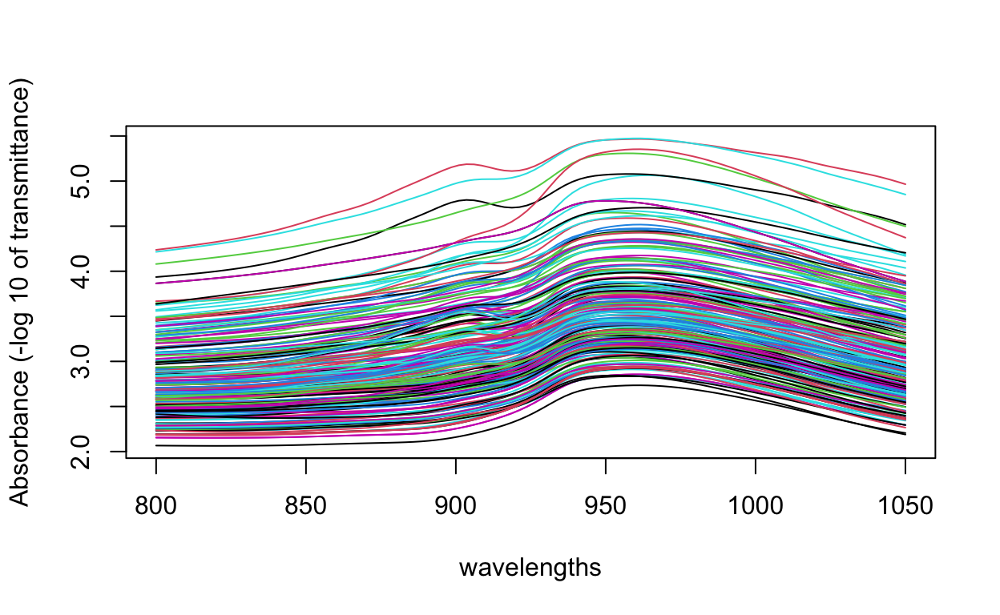
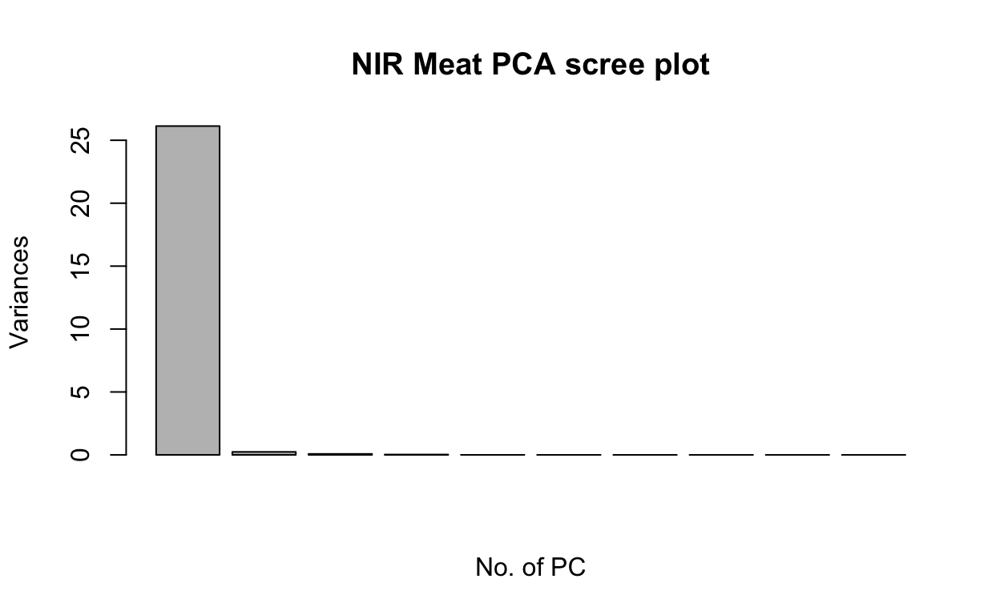
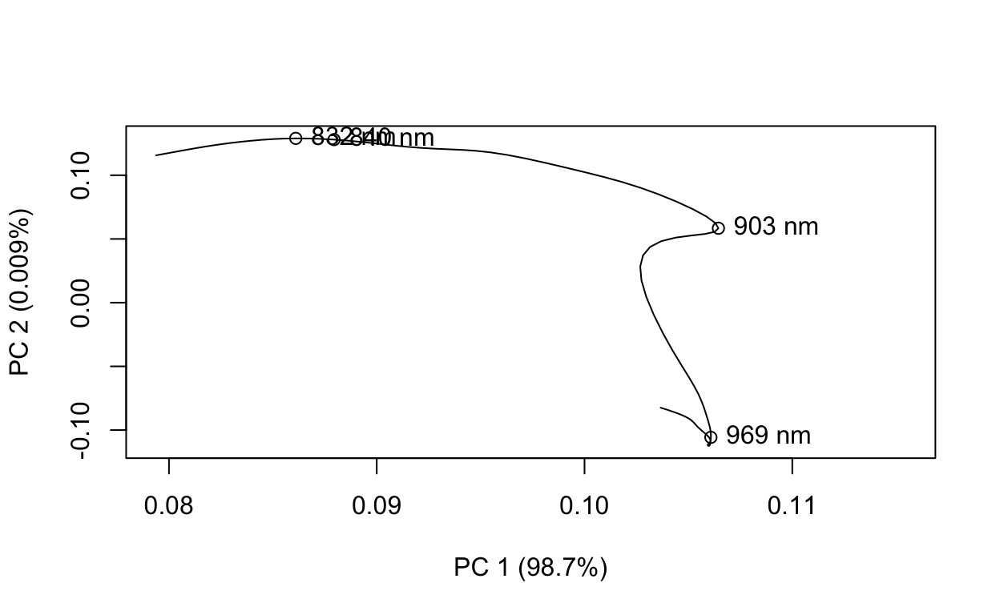
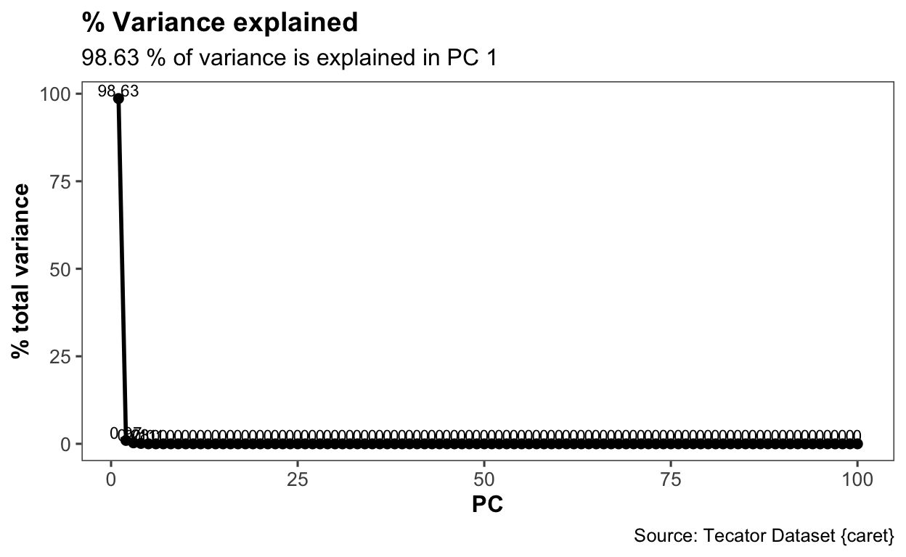
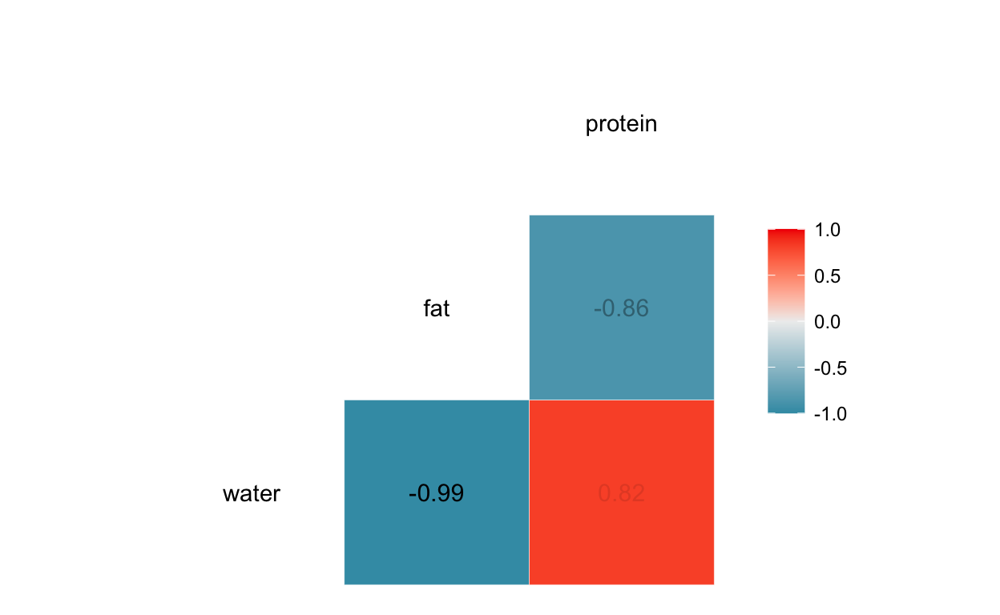
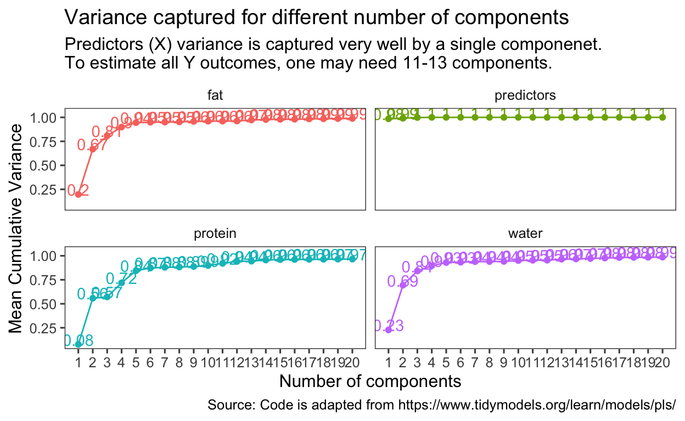

PLS regression on Meat NIR data
This example provides the workflow for analysing NIR data spectra to predict the fat, water and protein content of meat.
One of the many advantages of PLS is that it can handle many noisy, collinear (correlated) and missing variables, and can also simultaneously model several response variables Y.
The default algorithm is the NIPALS algorithm, which seeks to find the latent (or hidden) relationships among the X variables, which are highly correlated with the response (Y outcome).
Like PCA, PLS finds linear combinations of the predictors. These linear combinations are commonly called components, or latent variables. PLS linear combinations of X variables are chosen to maximally summarise covariance with the Y outcomes. This means that PLS finds components that maximally summarise the variation of the predictors (X) while simultaneously requiring these components to have maximum correlation with the response (Y). PLS is a supervised dimension reduction procedure, as compared to Principal Component Regression (PCR), which is an unsupervised procedure. PLS will identify the optimal predictor space dimension reduction for the purpose of regression with the outcome, Y. For PCA, the variance in X is captured as much as possible, but there may be cases in which variation in X is not related to variation in Y, or there may be high noise present, and in turn is not related to Y. Hence, Y cannot be predicted correctly since there is no relationship.
The NIPALS algorithm is suitable for large datasets (when number of samples, n is much greater than number of predictors, X). For scenarios where there are more predictors than samples, the algorithm by Rannar, which is a kernel based algorithm, is computationally more efficient.
There are two versions of PLS - PLS 1 and PLS 2. PLS 1 is used when there is only one Y outcome variable, and PLS 2 may be used when there are more than one Y outcome variables. In PLS 1, a model is build and tuned specific for a Y outcome variabe. In PLS 2, the model is tuned for more than one Y outcomes. It is preferred to tune a model specific for each Y outcome rather in practice.
IR spectroscopy is used to determine the chemical makeup of a substance. The theory of IR spectroscopy holds that unique molecualr structures absorb IR frequencies differently. In practice, a spectrometer fires a series of IR frequencies into a sample material, and the devide measures the absorbance of the sample at each individual frequency. This series of measurements creates a spectrum profile which can then be used to determine the chemical makeup of the sample material.
A Tecator Infratec Food and Feed Analyzer instrument was used to analyse 215 samples of meat across 100 frequencies (800-1050 nm). In addition to an IR profile, the percent content of water, fat and protein for each sample was determined using analytical chemistry.
The objective is the establish a predictive relationship between IR spectrum and fat content, to predict a sample’s fat content with IR.
These data are recorded on a Tecator Infratec Food and Feed Analyzer working in the wavelength range 850 - 1050 nm by the Near Infrared Transmission (NIT) principle. Each sample contains finely chopped pure meat with different moisture, fat and protein contents.
For each meat sample the data consists of a 100 channel spectrum of absorbances and the contents of moisture (water), fat and protein. The absorbance is -log10 of the transmittance measured by the spectrometer. The three contents, measured in percent, are determined by analytic chemistry.
data(tecator)
The matrix absorp contains the 100 absorbance values for the 215 samples The matrix endpoints contains the percent of moisture, fat, and protein in columns 1, 2, 3 respectively.
wavelengths = seq(800,1050, length.out = 100)
matplot(wavelengths, t(absorp), type = "l", lty = 1,
ylab = "Absorbance (-log 10 of transmittance)")

Importance of first k=8 (out of 100) components:
PC1 PC2 PC3 PC4 PC5 PC6
Standard deviation 5.1115 0.48840 0.28009 0.17374 0.03903 0.02581
Proportion of Variance 0.9868 0.00901 0.00296 0.00114 0.00006 0.00003
Cumulative Proportion 0.9868 0.99580 0.99876 0.99990 0.99996 0.99999
PC7 PC8
Standard deviation 0.01433 0.01041
Proportion of Variance 0.00001 0.00000
Cumulative Proportion 0.99999 1.00000One can see that the first component explains 98.7% of variance in X.
plot(nir.prcomp, main = "NIR Meat PCA scree plot",
xlab = "No. of PC")

One can choose number of PC = 2
nir.loadings <- nir.prcomp$rotation[, 1:2]
# find max loading for PC 1
nir.loadings %>%
as_tibble() %>%
rowid_to_column() %>%
pivot_longer(cols = starts_with("PC"),
names_to = "PC",
values_to = "loadings") %>%
dplyr::filter(PC == "PC1") %>%
mutate(abs_loading = abs(loadings)) %>%
arrange(desc(abs_loading)) %>%
head(n = 10)
# A tibble: 10 x 4
rowid PC loadings abs_loading
<int> <chr> <dbl> <dbl>
1 42 PC1 0.106 0.106
2 41 PC1 0.106 0.106
3 43 PC1 0.106 0.106
4 67 PC1 0.106 0.106
5 68 PC1 0.106 0.106
6 69 PC1 0.106 0.106
7 66 PC1 0.106 0.106
8 70 PC1 0.106 0.106
9 84 PC1 0.106 0.106
10 71 PC1 0.106 0.106# find max loading for PC 2
nir.loadings %>%
as_tibble() %>%
rowid_to_column() %>%
pivot_longer(cols = starts_with("PC"),
names_to = "PC",
values_to = "loadings") %>%
dplyr::filter(PC == "PC2") %>%
mutate(abs_loading = abs(loadings)) %>%
arrange(desc(abs_loading)) %>%
head(n = 10)
# A tibble: 10 x 4
rowid PC loadings abs_loading
<int> <chr> <dbl> <dbl>
1 14 PC2 0.129 0.129
2 15 PC2 0.129 0.129
3 13 PC2 0.129 0.129
4 16 PC2 0.129 0.129
5 12 PC2 0.128 0.128
6 17 PC2 0.128 0.128
7 11 PC2 0.128 0.128
8 18 PC2 0.127 0.127
9 10 PC2 0.127 0.127
10 9 PC2 0.126 0.126# check which wavelengths
wavelengths[42]
[1] 903.5354wavelengths[68]
[1] 969.1919wavelengths[14]
[1] 832.8283wavelengths[17]
[1] 840.404# Plot
offset <- c(0, 0.009)
plot(nir.loadings[, 1:2], type = "l",
xlim = range(nir.loadings[, 1]) + offset,
xlab = "PC 1 (98.7%)", ylab = "PC 2 (0.009%)")
points(nir.loadings[c(42,68, 14, 17), 1:2])
text(nir.loadings[c(42,68, 14, 17), 1:2], pos = 4,
labels = paste(c(903,969,832,840), "nm"))

I personally prefer this method because the plots can be customised, rather than using the default base R graphics.
# Y
endpoints.tibble <- endpoints %>% as_tibble(.name_repair = "unique")
# set names for Y
names(endpoints.tibble) <- c("water", "fat", "protein")
# X
absorp.tibble <- absorp %>% as_tibble(.name_repair = "unique") %>%
clean_names()
# combine both datasets
data_meat_x <- absorp.tibble
data_meat_y <- endpoints.tibble
# combine both datasets
data_meat <- cbind(endpoints.tibble, absorp.tibble) %>%
mutate(id = seq(1:215))
# Checking assumptions ----
data_meat_x %>%
cor() %>%
KMO() # Overal MSA = 0.97, greater than 0.70
Kaiser-Meyer-Olkin factor adequacy
Call: KMO(r = .)
Overall MSA = 0.97
MSA for each item =
x1 x2 x3 x4 x5 x6 x7 x8 x9 x10 x11 x12 x13 x14
0.99 0.98 0.97 0.97 0.96 0.96 0.96 0.98 0.98 0.98 0.97 0.96 0.96 0.96
x15 x16 x17 x18 x19 x20 x21 x22 x23 x24 x25 x26 x27 x28
0.97 0.98 0.98 0.99 0.98 0.96 0.96 0.96 0.96 0.96 0.97 0.99 0.98 0.98
x29 x30 x31 x32 x33 x34 x35 x36 x37 x38 x39 x40 x41 x42
0.97 0.97 0.97 0.97 0.97 0.97 0.98 0.98 0.98 0.98 0.98 0.98 0.97 0.96
x43 x44 x45 x46 x47 x48 x49 x50 x51 x52 x53 x54 x55 x56
0.96 0.97 0.97 0.98 0.98 0.98 0.98 0.97 0.97 0.97 0.96 0.96 0.96 0.96
x57 x58 x59 x60 x61 x62 x63 x64 x65 x66 x67 x68 x69 x70
0.97 0.97 0.98 0.98 0.98 0.98 0.98 0.98 0.97 0.96 0.96 0.96 0.97 0.97
x71 x72 x73 x74 x75 x76 x77 x78 x79 x80 x81 x82 x83 x84
0.97 0.98 0.98 0.97 0.98 0.98 0.97 0.98 0.98 0.98 0.98 0.98 0.97 0.97
x85 x86 x87 x88 x89 x90 x91 x92 x93 x94 x95 x96 x97 x98
0.97 0.97 0.97 0.98 0.97 0.96 0.96 0.97 0.97 0.98 0.98 0.98 0.98 0.98
x99 x100
0.97 0.97 data_meat_x %>%
cor() %>%
cortest.bartlett(., n = 215) # p < 0.05
$chisq
[1] Inf
$p.value
[1] 0
$df
[1] 4950# all assumptions met, ok to do PCA
# tidymodels PCA -----
# recipe
meat_pca_recipe <- recipe(~ ., data = data_meat) %>%
update_role(id, new_role = "id") %>%
update_role(water, fat, protein, new_role = "outcome") %>%
step_normalize(all_predictors()) %>%
step_pca(all_predictors(), id = "pca")
meat_pca_recipe
Data Recipe
Inputs:
role #variables
id 1
outcome 3
predictor 100
Operations:
Centering and scaling for all_predictors()
No PCA components were extracted.# prep
meat_pca_prep <- prep(meat_pca_recipe)
# loadings
tidy_pca_loadings <- meat_pca_prep %>%
tidy(id = "pca")
tidy_pca_loadings
# A tibble: 10,000 x 4
terms value component id
<chr> <dbl> <chr> <chr>
1 x1 0.0997 PC1 pca
2 x2 0.0997 PC1 pca
3 x3 0.0997 PC1 pca
4 x4 0.0997 PC1 pca
5 x5 0.0997 PC1 pca
6 x6 0.0996 PC1 pca
7 x7 0.0996 PC1 pca
8 x8 0.0997 PC1 pca
9 x9 0.0997 PC1 pca
10 x10 0.0997 PC1 pca
# … with 9,990 more rows# bake
meat_pca_bake <- bake(meat_pca_prep, data_meat)
meat_pca_bake # PCA LOADING VECTORS
# A tibble: 215 x 9
water fat protein id PC1 PC2 PC3 PC4 PC5
<dbl> <dbl> <dbl> <int> <dbl> <dbl> <dbl> <dbl> <dbl>
1 60.5 22.5 16.7 1 -4.30 -0.404 -0.137 -0.0939 0.105
2 46 40.1 13.5 2 0.998 0.486 -1.20 -0.0169 0.0303
3 71 8.4 20.5 3 -7.14 1.41 0.155 0.244 -0.0815
4 72.8 5.9 20.7 4 -1.81 1.15 0.544 0.00581 0.128
5 58.3 25.5 15.5 5 0.988 -1.19 -0.0591 -0.0248 0.101
6 44 42.7 13.7 6 5.56 0.226 -1.24 -0.0877 0.0470
7 44 42.7 13.7 7 4.96 0.590 -1.16 0.129 -0.129
8 69.3 10.6 19.3 8 -6.31 -0.625 0.166 -0.144 0.0222
9 61.4 19.9 17.7 9 11.6 -0.354 0.185 -0.269 0.0274
10 61.4 19.9 17.7 10 14.6 -0.274 0.459 -0.0457 -0.111
# … with 205 more rows# Check number of PC: ------
# Check number of PCs by eigenvalues
meat_pca_prep$steps[[2]]$res$sdev %>% as_tibble() %>%
filter(value>1) # only 1 PC
# A tibble: 1 x 1
value
<dbl>
1 9.93# check using scree plots
proportion_scree_plot <- meat_pca_prep %>%
tidy(id = "pca", type = "variance") %>%
filter(terms == "percent variance") %>%
ggplot(aes(component, value, label = value)) +
geom_point(size = 2) +
geom_line(size = 1) +
geom_text(aes(label = round(value, 2)), vjust = -0.2, size = 3) +
labs(title = "% Variance explained",
y = "% total variance",
x = "PC",
subtitle = "98.63 % of variance is explained in PC 1",
caption = "Source: Tecator Dataset {caret}") +
theme_few() +
theme(axis.title = element_text(face = "bold", size = 12),
axis.text = element_text(size = 10),
plot.title = element_text(size = 14, face = "bold"))
proportion_scree_plot

Alternatively, another ready-to-use format of date may be imported.
data(meats) # from modeldata package
meats
# A tibble: 215 x 103
x_001 x_002 x_003 x_004 x_005 x_006 x_007 x_008 x_009 x_010 x_011
<dbl> <dbl> <dbl> <dbl> <dbl> <dbl> <dbl> <dbl> <dbl> <dbl> <dbl>
1 2.62 2.62 2.62 2.62 2.62 2.62 2.62 2.62 2.63 2.63 2.63
2 2.83 2.84 2.84 2.85 2.85 2.86 2.86 2.87 2.87 2.88 2.88
3 2.58 2.58 2.59 2.59 2.59 2.59 2.59 2.60 2.60 2.60 2.60
4 2.82 2.82 2.83 2.83 2.83 2.83 2.83 2.84 2.84 2.84 2.84
5 2.79 2.79 2.79 2.79 2.80 2.80 2.80 2.80 2.81 2.81 2.81
6 3.01 3.02 3.02 3.03 3.03 3.04 3.04 3.05 3.06 3.06 3.07
7 2.99 2.99 3.00 3.01 3.01 3.02 3.02 3.03 3.04 3.04 3.05
8 2.53 2.53 2.53 2.53 2.53 2.53 2.53 2.53 2.54 2.54 2.54
9 3.27 3.28 3.29 3.29 3.30 3.31 3.31 3.32 3.33 3.33 3.34
10 3.40 3.41 3.41 3.42 3.43 3.43 3.44 3.45 3.46 3.47 3.48
# … with 205 more rows, and 92 more variables: x_012 <dbl>,
# x_013 <dbl>, x_014 <dbl>, x_015 <dbl>, x_016 <dbl>, x_017 <dbl>,
# x_018 <dbl>, x_019 <dbl>, x_020 <dbl>, x_021 <dbl>, x_022 <dbl>,
# x_023 <dbl>, x_024 <dbl>, x_025 <dbl>, x_026 <dbl>, x_027 <dbl>,
# x_028 <dbl>, x_029 <dbl>, x_030 <dbl>, x_031 <dbl>, x_032 <dbl>,
# x_033 <dbl>, x_034 <dbl>, x_035 <dbl>, x_036 <dbl>, x_037 <dbl>,
# x_038 <dbl>, x_039 <dbl>, x_040 <dbl>, x_041 <dbl>, x_042 <dbl>,
# x_043 <dbl>, x_044 <dbl>, x_045 <dbl>, x_046 <dbl>, x_047 <dbl>,
# x_048 <dbl>, x_049 <dbl>, x_050 <dbl>, x_051 <dbl>, x_052 <dbl>,
# x_053 <dbl>, x_054 <dbl>, x_055 <dbl>, x_056 <dbl>, x_057 <dbl>,
# x_058 <dbl>, x_059 <dbl>, x_060 <dbl>, x_061 <dbl>, x_062 <dbl>,
# x_063 <dbl>, x_064 <dbl>, x_065 <dbl>, x_066 <dbl>, x_067 <dbl>,
# x_068 <dbl>, x_069 <dbl>, x_070 <dbl>, x_071 <dbl>, x_072 <dbl>,
# x_073 <dbl>, x_074 <dbl>, x_075 <dbl>, x_076 <dbl>, x_077 <dbl>,
# x_078 <dbl>, x_079 <dbl>, x_080 <dbl>, x_081 <dbl>, x_082 <dbl>,
# x_083 <dbl>, x_084 <dbl>, x_085 <dbl>, x_086 <dbl>, x_087 <dbl>,
# x_088 <dbl>, x_089 <dbl>, x_090 <dbl>, x_091 <dbl>, x_092 <dbl>,
# x_093 <dbl>, x_094 <dbl>, x_095 <dbl>, x_096 <dbl>, x_097 <dbl>,
# x_098 <dbl>, x_099 <dbl>, x_100 <dbl>, water <dbl>, fat <dbl>,
# protein <dbl>Note: preprocessing of data, should be done only for TRAINING and not the whole dataset to ensure independence of training and testing dataset.
set.seed(20210318)
meat_split <- initial_split(meats, prop = 0.80)
meat_training <- meat_split %>% training()
meat_testing <- meat_split %>% testing()
Just to check the data to see preprocessing steps required.
skim(meat_training)
| Name | meat_training |
| Number of rows | 173 |
| Number of columns | 103 |
| _______________________ | |
| Column type frequency: | |
| numeric | 103 |
| ________________________ | |
| Group variables | None |
Variable type: numeric
| skim_variable | n_missing | complete_rate | mean | sd | p0 | p25 | p50 | p75 | p100 | hist |
|---|---|---|---|---|---|---|---|---|---|---|
| x_001 | 0 | 1 | 2.80 | 0.40 | 2.07 | 2.53 | 2.74 | 2.99 | 4.22 | ▃▇▃▁▁ |
| x_002 | 0 | 1 | 2.80 | 0.40 | 2.07 | 2.53 | 2.74 | 3.00 | 4.23 | ▃▇▃▁▁ |
| x_003 | 0 | 1 | 2.81 | 0.40 | 2.07 | 2.53 | 2.74 | 3.01 | 4.24 | ▃▇▃▁▁ |
| x_004 | 0 | 1 | 2.81 | 0.41 | 2.06 | 2.53 | 2.74 | 3.01 | 4.25 | ▃▇▃▁▁ |
| x_005 | 0 | 1 | 2.81 | 0.41 | 2.06 | 2.53 | 2.74 | 3.02 | 4.26 | ▃▇▃▁▁ |
| x_006 | 0 | 1 | 2.81 | 0.41 | 2.06 | 2.52 | 2.75 | 3.03 | 4.27 | ▃▇▃▁▁ |
| x_007 | 0 | 1 | 2.82 | 0.41 | 2.06 | 2.53 | 2.75 | 3.03 | 4.28 | ▃▇▃▁▁ |
| x_008 | 0 | 1 | 2.82 | 0.42 | 2.06 | 2.53 | 2.75 | 3.04 | 4.29 | ▃▇▃▂▁ |
| x_009 | 0 | 1 | 2.82 | 0.42 | 2.06 | 2.53 | 2.76 | 3.05 | 4.30 | ▃▇▃▂▁ |
| x_010 | 0 | 1 | 2.83 | 0.42 | 2.06 | 2.53 | 2.76 | 3.05 | 4.31 | ▃▇▃▂▁ |
| x_011 | 0 | 1 | 2.83 | 0.42 | 2.06 | 2.53 | 2.77 | 3.06 | 4.33 | ▃▇▃▂▁ |
| x_012 | 0 | 1 | 2.84 | 0.43 | 2.06 | 2.54 | 2.77 | 3.07 | 4.34 | ▃▇▃▂▁ |
| x_013 | 0 | 1 | 2.84 | 0.43 | 2.06 | 2.54 | 2.78 | 3.07 | 4.35 | ▃▇▃▂▁ |
| x_014 | 0 | 1 | 2.85 | 0.43 | 2.06 | 2.54 | 2.78 | 3.08 | 4.37 | ▃▇▃▂▁ |
| x_015 | 0 | 1 | 2.85 | 0.43 | 2.07 | 2.55 | 2.78 | 3.09 | 4.38 | ▃▇▃▂▁ |
| x_016 | 0 | 1 | 2.86 | 0.44 | 2.07 | 2.55 | 2.79 | 3.10 | 4.40 | ▃▇▃▁▁ |
| x_017 | 0 | 1 | 2.86 | 0.44 | 2.07 | 2.55 | 2.79 | 3.11 | 4.42 | ▅▇▃▁▁ |
| x_018 | 0 | 1 | 2.87 | 0.44 | 2.07 | 2.56 | 2.80 | 3.12 | 4.43 | ▅▇▃▁▁ |
| x_019 | 0 | 1 | 2.88 | 0.45 | 2.07 | 2.56 | 2.80 | 3.13 | 4.45 | ▅▇▃▁▁ |
| x_020 | 0 | 1 | 2.89 | 0.45 | 2.07 | 2.57 | 2.81 | 3.14 | 4.47 | ▅▇▅▁▁ |
| x_021 | 0 | 1 | 2.90 | 0.45 | 2.07 | 2.57 | 2.81 | 3.15 | 4.49 | ▅▇▅▁▁ |
| x_022 | 0 | 1 | 2.90 | 0.46 | 2.08 | 2.57 | 2.82 | 3.16 | 4.51 | ▅▇▅▁▁ |
| x_023 | 0 | 1 | 2.91 | 0.46 | 2.08 | 2.58 | 2.82 | 3.17 | 4.53 | ▅▇▅▁▁ |
| x_024 | 0 | 1 | 2.92 | 0.46 | 2.08 | 2.59 | 2.83 | 3.17 | 4.55 | ▅▇▅▁▁ |
| x_025 | 0 | 1 | 2.93 | 0.47 | 2.08 | 2.59 | 2.84 | 3.18 | 4.57 | ▅▇▅▁▁ |
| x_026 | 0 | 1 | 2.93 | 0.47 | 2.09 | 2.60 | 2.85 | 3.19 | 4.59 | ▅▇▅▁▁ |
| x_027 | 0 | 1 | 2.94 | 0.47 | 2.09 | 2.60 | 2.86 | 3.20 | 4.61 | ▅▇▅▁▁ |
| x_028 | 0 | 1 | 2.95 | 0.48 | 2.09 | 2.61 | 2.87 | 3.21 | 4.63 | ▅▇▅▁▁ |
| x_029 | 0 | 1 | 2.96 | 0.48 | 2.09 | 2.61 | 2.88 | 3.22 | 4.65 | ▅▇▅▁▁ |
| x_030 | 0 | 1 | 2.97 | 0.48 | 2.09 | 2.62 | 2.88 | 3.24 | 4.68 | ▅▇▅▂▁ |
| x_031 | 0 | 1 | 2.98 | 0.49 | 2.10 | 2.62 | 2.90 | 3.26 | 4.70 | ▅▇▅▂▁ |
| x_032 | 0 | 1 | 2.99 | 0.49 | 2.10 | 2.63 | 2.91 | 3.28 | 4.73 | ▅▇▅▂▁ |
| x_033 | 0 | 1 | 3.00 | 0.50 | 2.10 | 2.64 | 2.91 | 3.31 | 4.76 | ▅▇▅▂▁ |
| x_034 | 0 | 1 | 3.01 | 0.50 | 2.10 | 2.65 | 2.93 | 3.33 | 4.78 | ▅▇▅▂▁ |
| x_035 | 0 | 1 | 3.03 | 0.51 | 2.11 | 2.66 | 2.94 | 3.36 | 4.81 | ▅▇▅▂▁ |
| x_036 | 0 | 1 | 3.04 | 0.51 | 2.11 | 2.68 | 2.94 | 3.39 | 4.84 | ▅▇▅▂▁ |
| x_037 | 0 | 1 | 3.05 | 0.52 | 2.12 | 2.69 | 2.95 | 3.42 | 4.87 | ▅▇▅▂▁ |
| x_038 | 0 | 1 | 3.07 | 0.52 | 2.13 | 2.70 | 2.97 | 3.45 | 4.90 | ▅▇▅▂▁ |
| x_039 | 0 | 1 | 3.09 | 0.52 | 2.14 | 2.72 | 2.99 | 3.47 | 4.93 | ▅▇▅▂▁ |
| x_040 | 0 | 1 | 3.11 | 0.53 | 2.15 | 2.73 | 3.01 | 3.48 | 4.96 | ▅▇▅▂▁ |
| x_041 | 0 | 1 | 3.12 | 0.53 | 2.17 | 2.74 | 3.03 | 3.50 | 4.98 | ▅▇▅▂▁ |
| x_042 | 0 | 1 | 3.14 | 0.53 | 2.18 | 2.76 | 3.04 | 3.52 | 5.00 | ▅▇▅▂▁ |
| x_043 | 0 | 1 | 3.15 | 0.53 | 2.20 | 2.78 | 3.05 | 3.53 | 5.01 | ▅▇▅▂▁ |
| x_044 | 0 | 1 | 3.16 | 0.53 | 2.22 | 2.79 | 3.06 | 3.52 | 5.02 | ▅▇▅▂▁ |
| x_045 | 0 | 1 | 3.17 | 0.52 | 2.24 | 2.80 | 3.08 | 3.50 | 5.02 | ▅▇▅▂▁ |
| x_046 | 0 | 1 | 3.19 | 0.52 | 2.27 | 2.82 | 3.10 | 3.49 | 5.02 | ▅▇▅▁▁ |
| x_047 | 0 | 1 | 3.20 | 0.51 | 2.29 | 2.84 | 3.10 | 3.50 | 5.03 | ▅▇▅▁▁ |
| x_048 | 0 | 1 | 3.22 | 0.51 | 2.32 | 2.86 | 3.12 | 3.50 | 5.04 | ▅▇▅▁▁ |
| x_049 | 0 | 1 | 3.25 | 0.51 | 2.35 | 2.89 | 3.15 | 3.52 | 5.06 | ▅▇▅▁▁ |
| x_050 | 0 | 1 | 3.28 | 0.51 | 2.39 | 2.93 | 3.19 | 3.55 | 5.09 | ▅▇▅▁▁ |
| x_051 | 0 | 1 | 3.32 | 0.51 | 2.43 | 2.97 | 3.22 | 3.58 | 5.13 | ▅▇▅▁▁ |
| x_052 | 0 | 1 | 3.36 | 0.51 | 2.48 | 3.01 | 3.27 | 3.61 | 5.17 | ▅▇▃▂▁ |
| x_053 | 0 | 1 | 3.41 | 0.51 | 2.53 | 3.05 | 3.32 | 3.65 | 5.23 | ▅▇▃▁▁ |
| x_054 | 0 | 1 | 3.45 | 0.52 | 2.57 | 3.09 | 3.37 | 3.70 | 5.28 | ▅▇▃▁▁ |
| x_055 | 0 | 1 | 3.50 | 0.52 | 2.61 | 3.13 | 3.41 | 3.74 | 5.33 | ▅▇▃▁▁ |
| x_056 | 0 | 1 | 3.53 | 0.52 | 2.65 | 3.16 | 3.45 | 3.78 | 5.37 | ▅▇▃▁▁ |
| x_057 | 0 | 1 | 3.56 | 0.53 | 2.67 | 3.19 | 3.48 | 3.81 | 5.41 | ▅▇▃▁▁ |
| x_058 | 0 | 1 | 3.58 | 0.53 | 2.69 | 3.21 | 3.51 | 3.83 | 5.43 | ▅▇▃▁▁ |
| x_059 | 0 | 1 | 3.59 | 0.53 | 2.71 | 3.22 | 3.53 | 3.84 | 5.44 | ▅▇▃▁▁ |
| x_060 | 0 | 1 | 3.60 | 0.53 | 2.72 | 3.23 | 3.54 | 3.85 | 5.45 | ▅▇▃▁▁ |
| x_061 | 0 | 1 | 3.61 | 0.53 | 2.72 | 3.24 | 3.55 | 3.86 | 5.46 | ▅▇▃▁▁ |
| x_062 | 0 | 1 | 3.61 | 0.53 | 2.73 | 3.25 | 3.55 | 3.86 | 5.47 | ▆▇▃▁▁ |
| x_063 | 0 | 1 | 3.61 | 0.53 | 2.73 | 3.25 | 3.56 | 3.87 | 5.47 | ▆▇▃▁▁ |
| x_064 | 0 | 1 | 3.62 | 0.53 | 2.73 | 3.24 | 3.56 | 3.87 | 5.47 | ▆▇▃▁▁ |
| x_065 | 0 | 1 | 3.61 | 0.53 | 2.73 | 3.24 | 3.55 | 3.87 | 5.47 | ▆▇▃▁▁ |
| x_066 | 0 | 1 | 3.61 | 0.53 | 2.73 | 3.24 | 3.55 | 3.86 | 5.47 | ▆▇▃▁▁ |
| x_067 | 0 | 1 | 3.60 | 0.53 | 2.73 | 3.23 | 3.54 | 3.85 | 5.47 | ▆▇▃▁▁ |
| x_068 | 0 | 1 | 3.60 | 0.53 | 2.72 | 3.22 | 3.53 | 3.83 | 5.46 | ▆▇▃▁▁ |
| x_069 | 0 | 1 | 3.59 | 0.53 | 2.72 | 3.20 | 3.52 | 3.82 | 5.45 | ▆▇▃▁▁ |
| x_070 | 0 | 1 | 3.58 | 0.53 | 2.71 | 3.19 | 3.51 | 3.82 | 5.44 | ▆▇▃▁▁ |
| x_071 | 0 | 1 | 3.56 | 0.53 | 2.70 | 3.18 | 3.50 | 3.81 | 5.43 | ▆▇▃▁▁ |
| x_072 | 0 | 1 | 3.55 | 0.53 | 2.69 | 3.17 | 3.49 | 3.80 | 5.42 | ▆▇▃▁▁ |
| x_073 | 0 | 1 | 3.54 | 0.53 | 2.68 | 3.16 | 3.48 | 3.79 | 5.40 | ▆▇▃▁▁ |
| x_074 | 0 | 1 | 3.52 | 0.53 | 2.66 | 3.14 | 3.46 | 3.78 | 5.39 | ▆▇▃▁▁ |
| x_075 | 0 | 1 | 3.51 | 0.53 | 2.65 | 3.13 | 3.45 | 3.77 | 5.37 | ▆▇▃▁▁ |
| x_076 | 0 | 1 | 3.49 | 0.53 | 2.63 | 3.11 | 3.43 | 3.75 | 5.36 | ▆▇▃▁▁ |
| x_077 | 0 | 1 | 3.47 | 0.53 | 2.62 | 3.09 | 3.40 | 3.74 | 5.34 | ▆▇▃▁▁ |
| x_078 | 0 | 1 | 3.45 | 0.53 | 2.60 | 3.07 | 3.38 | 3.73 | 5.32 | ▆▇▃▁▁ |
| x_079 | 0 | 1 | 3.43 | 0.53 | 2.59 | 3.05 | 3.37 | 3.72 | 5.30 | ▆▇▃▁▁ |
| x_080 | 0 | 1 | 3.42 | 0.53 | 2.57 | 3.03 | 3.35 | 3.71 | 5.29 | ▆▇▃▁▁ |
| x_081 | 0 | 1 | 3.40 | 0.53 | 2.55 | 3.01 | 3.33 | 3.68 | 5.27 | ▇▇▃▁▁ |
| x_082 | 0 | 1 | 3.38 | 0.53 | 2.53 | 2.99 | 3.30 | 3.66 | 5.25 | ▇▇▅▁▁ |
| x_083 | 0 | 1 | 3.36 | 0.53 | 2.51 | 2.97 | 3.28 | 3.65 | 5.23 | ▇▇▅▁▁ |
| x_084 | 0 | 1 | 3.34 | 0.53 | 2.50 | 2.96 | 3.26 | 3.63 | 5.21 | ▇▇▅▂▁ |
| x_085 | 0 | 1 | 3.32 | 0.53 | 2.48 | 2.94 | 3.23 | 3.62 | 5.19 | ▇▇▅▂▁ |
| x_086 | 0 | 1 | 3.30 | 0.53 | 2.46 | 2.92 | 3.21 | 3.60 | 5.17 | ▇▇▅▂▁ |
| x_087 | 0 | 1 | 3.28 | 0.53 | 2.44 | 2.90 | 3.18 | 3.57 | 5.15 | ▇▇▅▂▁ |
| x_088 | 0 | 1 | 3.25 | 0.53 | 2.42 | 2.87 | 3.16 | 3.55 | 5.13 | ▇▇▅▂▁ |
| x_089 | 0 | 1 | 3.23 | 0.53 | 2.40 | 2.85 | 3.13 | 3.53 | 5.10 | ▇▇▅▂▁ |
| x_090 | 0 | 1 | 3.21 | 0.53 | 2.38 | 2.83 | 3.11 | 3.51 | 5.08 | ▇▇▅▂▁ |
| x_091 | 0 | 1 | 3.19 | 0.52 | 2.36 | 2.81 | 3.09 | 3.49 | 5.05 | ▇▇▅▂▁ |
| x_092 | 0 | 1 | 3.17 | 0.52 | 2.34 | 2.78 | 3.08 | 3.48 | 5.03 | ▇▇▅▂▁ |
| x_093 | 0 | 1 | 3.15 | 0.52 | 2.32 | 2.77 | 3.06 | 3.46 | 5.01 | ▇▇▅▂▁ |
| x_094 | 0 | 1 | 3.13 | 0.52 | 2.30 | 2.75 | 3.04 | 3.45 | 4.99 | ▇▇▅▂▁ |
| x_095 | 0 | 1 | 3.11 | 0.52 | 2.28 | 2.73 | 3.01 | 3.43 | 4.97 | ▇▇▅▂▁ |
| x_096 | 0 | 1 | 3.09 | 0.52 | 2.26 | 2.70 | 2.99 | 3.42 | 4.95 | ▇▇▅▂▁ |
| x_097 | 0 | 1 | 3.07 | 0.52 | 2.24 | 2.68 | 2.97 | 3.41 | 4.92 | ▇▇▅▂▁ |
| x_098 | 0 | 1 | 3.05 | 0.52 | 2.22 | 2.67 | 2.95 | 3.39 | 4.90 | ▇▇▅▂▁ |
| x_099 | 0 | 1 | 3.04 | 0.52 | 2.21 | 2.65 | 2.94 | 3.37 | 4.88 | ▇▇▅▂▁ |
| x_100 | 0 | 1 | 3.02 | 0.52 | 2.19 | 2.63 | 2.92 | 3.35 | 4.85 | ▇▇▅▂▁ |
| water | 0 | 1 | 63.32 | 9.99 | 40.20 | 55.50 | 65.90 | 72.00 | 76.60 | ▂▂▃▅▇ |
| fat | 0 | 1 | 18.07 | 12.83 | 0.90 | 7.20 | 14.30 | 28.10 | 48.20 | ▇▅▃▂▂ |
| protein | 0 | 1 | 17.69 | 3.08 | 11.00 | 15.30 | 18.90 | 20.20 | 21.80 | ▂▃▃▇▇ |
Checking the correlation between the Y outcomes:
meat_training %>%
select(water:protein) %>%
ggcorr(label = T, label_alpha = T, label_round = 2)

From the exploratory data analysis, we can see that:
This section below is taken from: https://www.tidymodels.org/learn/models/pls/, with some changes to the preprocessing steps.
This step includes preprocessing, specifying pls model to be used and model tuning.
For spectral data, autoscaling (normalization) is not usually recommended. When every spectral variable is set to the same standard deviation, the noise is blown up to the same size as the signal that contains the actual information. In such cases, only means-centering is required.
# Preprocessing only for TRAINING dataset
# recipe
meat_reciped_pls2 <- recipe(water + fat + protein ~., data = meat_training) %>%
update_role(water, fat, protein, new_role = "outcome") %>%
step_center(all_predictors())
# set folds for cross-validation
# repeated 10-fold cross validation for tuning model to select optimal number of components, since this is a small dataset
set.seed(202103182)
folds_pls2 <- vfold_cv(meat_training, repeats = 10)
folds_pls2 <-
folds_pls2 %>%
mutate(recipes = map(splits, prepper, recipe = meat_reciped_pls2))
To fit the model, we need to:
format the X and Y into 2 different matrices, one for X and one for Y. THis is the format which the pls package requires.
Estimate the Y outcomes
get_var_explained <- function(recipe, ...) {
# Extract the predictors and outcomes into their own matrices
y_mat <- bake(recipe, new_data = NULL, composition = "matrix", all_outcomes())
x_mat <- bake(recipe, new_data = NULL, composition = "matrix", all_predictors())
# The pls package prefers the data in a data frame where the outcome
# and predictors are in _matrices_. To make sure this is formatted
# properly, use the `I()` function to inhibit `data.frame()` from making
# all the individual columns. `pls_format` should have two columns.
pls_format <- data.frame(
endpoints = I(y_mat),
measurements = I(x_mat)
)
# Fit the model
mod <- plsr(endpoints ~ measurements, data = pls_format)
# Get the proportion of the predictor variance that is explained
# by the model for different number of components.
xve <- explvar(mod)/100
# To do the same for the outcome, it is more complex. This code
# was extracted from pls:::summary.mvr.
explained <-
drop(pls::R2(mod, estimate = "train", intercept = FALSE)$val) %>%
# transpose so that components are in rows
t() %>%
as_tibble() %>%
# Add the predictor proportions
mutate(predictors = cumsum(xve) %>% as.vector(),
components = seq_along(xve)) %>%
# Put into a tidy format that is tall
pivot_longer(
cols = c(-components),
names_to = "source",
values_to = "proportion"
)
}
# Compute this dataframe for each resample, and save the results in different columns:
folds_pls2 <-
folds_pls2 %>%
dplyr::mutate(var = map(recipes, get_var_explained),
var = unname(var))
Extract variance data:
variance_data <-
bind_rows(folds_pls2[["var"]]) %>% # select var col in folds dataset
filter(components <= 20) %>% # limit components to from 1 to 20
group_by(components, source) %>%
summarize(proportion = mean(proportion))
ggplot(variance_data, aes(x = components, y = proportion,
col = source, label = round(proportion,2))) +
geom_line() +
geom_point() +
geom_text(nudge_y = 0.05) +
labs(title = "Variance captured for different number of components",
subtitle = "Predictors (X) variance is captured very well by a single componenet.\nTo estimate all Y outcomes, one may need 11-13 components.",
x = "Number of components",
y = "Mean Cumulative Variance",
caption = "Source: Code is adapted from https://www.tidymodels.org/learn/models/pls/") +
facet_wrap(source ~., ncol = 2, scales = "fixed") +
scale_x_continuous(breaks = c(1:20), n.breaks = 19) +
theme_few() +
theme(legend.position = "none")

Similar to earlier, to evaluate the PLS model, 10 repeats of the 10-folds cross validation will be used (100 holdout samples) to evaluate the overall model performance (RMSE, MAE, r-sq). However, individual models will be built for water, protein and fat.
Steps involved:
# folds for repeated cross validation
set.seed(20210325)
folds_pls1 <- vfold_cv(meat_training, v = 10, repeats = 10)
# recipe
meat_reciped_water_pls1 <- recipe(water ~., data = meats) %>%
update_role(fat, protein, new_role = "other_y") %>%
step_center(all_predictors())
meat_reciped_water_pls1
Data Recipe
Inputs:
role #variables
other_y 2
outcome 1
predictor 100
Operations:
Centering for all_predictors()# fit model
pls_water_model <- plsmod::pls(num_comp = tune()) %>%
set_mode("regression") %>% # can be either classification or regression
set_engine("mixOmics") # to specify which package to use
# put into workflow
pls_water_workflow <- workflow() %>%
add_recipe(meat_reciped_water_pls1) %>%
add_model(pls_water_model)
# create grid
pls_1_grid <- expand.grid(num_comp = seq(from = 1, to = 20, by = 1))
tuned_pls1_water_results <- pls_water_workflow %>%
tune_grid(
resamples = folds_pls1,
grid = pls_1_grid,
metrics = metric_set(rmse, rsq, mae)
)
# model results
water_model_results <- tuned_pls1_water_results %>%
collect_metrics()
water_model_results
# A tibble: 60 x 7
num_comp .metric .estimator mean n std_err .config
<dbl> <chr> <chr> <dbl> <int> <dbl> <chr>
1 1 mae standard 7.40 100 0.113 Preprocessor1_Mode…
2 1 rmse standard 8.77 100 0.137 Preprocessor1_Mode…
3 1 rsq standard 0.252 100 0.0162 Preprocessor1_Mode…
4 2 mae standard 4.78 100 0.0874 Preprocessor1_Mode…
5 2 rmse standard 6.06 100 0.110 Preprocessor1_Mode…
6 2 rsq standard 0.657 100 0.0121 Preprocessor1_Mode…
7 3 mae standard 3.31 100 0.0635 Preprocessor1_Mode…
8 3 rmse standard 4.10 100 0.0857 Preprocessor1_Mode…
9 3 rsq standard 0.823 100 0.0102 Preprocessor1_Mode…
10 4 mae standard 2.78 100 0.0439 Preprocessor1_Mode…
# … with 50 more rows# best model
tuned_pls1_water_results %>%
select_best(metric = "rmse") # num_comp = 18
# A tibble: 1 x 2
num_comp .config
<dbl> <chr>
1 18 Preprocessor1_Model18tuned_pls1_water_results %>%
select_best(metric = "rsq") # num_comp = 18
# A tibble: 1 x 2
num_comp .config
<dbl> <chr>
1 18 Preprocessor1_Model18tuned_pls1_water_results %>%
select_best(metric = "mae") # num_comp = 18
# A tibble: 1 x 2
num_comp .config
<dbl> <chr>
1 18 Preprocessor1_Model18# visualize
tuned_pls1_water_results %>%
collect_metrics() %>%
ggplot(aes(num_comp, mean, col = .metric)) +
geom_point() +
geom_line() +
scale_x_continuous(n.breaks = 20) +
labs(x = "Number of components",
y = "Indicator",
title = "Plot of MAE, RMSE and R-SQ vs No. of components for TRAINING dataset, with 10-fold repeated cross validation",
subtitle = "Predicting Water Content: Optimal number of components is 18.") +
facet_grid(.metric ~.) +
theme_few() +
theme(legend.position = "none")
# Update model and workflow:
updated_pls_water_model <- plsmod::pls(num_comp = 18) %>%
set_mode("regression") %>%
set_engine("mixOmics")
updated_pls_water_workflow <- pls_water_workflow %>%
update_model(updated_pls_water_model)
pls_water_fit <- updated_pls_water_workflow %>%
fit(data = meat_training)
# Check the most important X variables for the updated Water Model:
tidy_pls_water <- pls_water_fit %>%
pull_workflow_fit() %>%
tidy()
# Variable importance
tidy_pls_water %>%
filter(term != "Y",
component == c(1:18)) %>%
group_by(component) %>%
slice_max(abs(value), n = 20) %>%
ungroup() %>%
ggplot(aes(value, fct_reorder(term, value), fill = factor(component))) +
geom_col(show.legend = F) +
facet_wrap( ~ component, scales = "free_y") +
labs( y = NULL) +
theme_few()
# Assess
pls_water_fit %>%
predict(new_data = meat_training) %>%
mutate(truth = meat_training$water) %>%
ggplot(aes(truth, .pred)) +
geom_point() +
geom_abline() +
labs(title = "Actual vs Predicted for TRAINING dataset",
x = "Actual Water Content",
y = "Predicted Water Content") +
theme_few()
# for TEST dataset
pls_water_fit %>%
predict(new_data = meat_testing) %>%
mutate(truth = meat_testing$water) %>%
ggplot(aes(truth, .pred)) +
geom_point() +
geom_abline() +
labs(title = "Actual vs Predicted for TEST dataset",
x = "Actual Water Content",
y = "Predicted Water Content") +
theme_few()
# assessing model on test data
updated_pls_water_workflow %>%
last_fit(meat_split) %>%
collect_metrics()
# A tibble: 2 x 4
.metric .estimator .estimate .config
<chr> <chr> <dbl> <chr>
1 rmse standard 2.32 Preprocessor1_Model1
2 rsq standard 0.944 Preprocessor1_Model1From above, it seems that the prediction of moisture content is more accurate for higher water content samples.
pls_water_fit %>% predict(trial_data), where trial_data has the NIR spectrum.
Repeat the workflow above for fat:
meat_reciped_fat_pls1 <- recipe(fat ~., data = meats) %>%
update_role(water, protein, new_role = "other_y") %>%
step_center(all_predictors())
pls_fat_model <- plsmod::pls(num_comp = tune()) %>%
set_mode("regression") %>% # can be either classification or regression
set_engine("mixOmics")
pls_fat_workflow <- workflow() %>%
add_recipe(meat_reciped_fat_pls1) %>%
add_model(pls_fat_model)
tuned_pls1_fat_results <- pls_fat_workflow %>%
tune_grid(
resamples = folds_pls1,
grid = pls_1_grid,
metrics = metric_set(rmse, rsq, mae)
)
# model results
fat_model_results <- tuned_pls1_fat_results %>%
collect_metrics()
fat_model_results
# A tibble: 60 x 7
num_comp .metric .estimator mean n std_err .config
<dbl> <chr> <chr> <dbl> <int> <dbl> <chr>
1 1 mae standard 9.50 100 0.149 Preprocessor1_Mod…
2 1 rmse standard 11.5 100 0.178 Preprocessor1_Mod…
3 1 rsq standard 0.223 100 0.0155 Preprocessor1_Mod…
4 2 mae standard 6.32 100 0.120 Preprocessor1_Mod…
5 2 rmse standard 8.21 100 0.143 Preprocessor1_Mod…
6 2 rsq standard 0.617 100 0.0126 Preprocessor1_Mod…
7 3 mae standard 4.24 100 0.0914 Preprocessor1_Mod…
8 3 rmse standard 5.43 100 0.133 Preprocessor1_Mod…
9 3 rsq standard 0.809 100 0.0123 Preprocessor1_Mod…
10 4 mae standard 3.57 100 0.0576 Preprocessor1_Mod…
# … with 50 more rows# best model
tuned_pls1_fat_results %>%
select_best(metric = "rmse") # num_comp = 19
# A tibble: 1 x 2
num_comp .config
<dbl> <chr>
1 19 Preprocessor1_Model19tuned_pls1_fat_results %>%
select_best(metric = "rsq") # num_comp = 18
# A tibble: 1 x 2
num_comp .config
<dbl> <chr>
1 18 Preprocessor1_Model18tuned_pls1_fat_results %>%
select_best(metric = "mae") # num_comp = 19
# A tibble: 1 x 2
num_comp .config
<dbl> <chr>
1 19 Preprocessor1_Model19# visualize
tuned_pls1_fat_results %>%
collect_metrics() %>%
ggplot(aes(num_comp, mean, col = .metric)) +
geom_point() +
geom_line() +
scale_x_continuous(n.breaks = 20) +
labs(x = "Number of components",
y = "Indicator",
title = "Plot of MAE, RMSE and R-SQ vs No. of components for TRAINING dataset, with 10-fold repeated cross validation",
subtitle = "Predicting Fat Content: Optimal number of components is 18.") +
facet_grid(.metric ~.) +
theme_few() +
theme(legend.position = "none")
# Update model and workflow:
updated_pls_fat_model <- plsmod::pls(num_comp = 18) %>%
set_mode("regression") %>%
set_engine("mixOmics")
updated_pls_fat_workflow <- pls_fat_workflow %>%
update_model(updated_pls_fat_model)
pls_fat_fit <- updated_pls_fat_workflow %>%
fit(data = meat_training)
# Check the most important X variables for the updated Water Model:
tidy_pls_fat <- pls_fat_fit %>%
pull_workflow_fit() %>%
tidy()
# Variable importance
tidy_pls_fat %>%
filter(term != "Y",
component == c(1:18)) %>%
group_by(component) %>%
slice_max(abs(value), n = 20) %>%
ungroup() %>%
ggplot(aes(value, fct_reorder(term, value), fill = factor(component))) +
geom_col(show.legend = F) +
facet_wrap( ~ component, scales = "free_y") +
labs( y = NULL) +
theme_few()
# Assess
pls_fat_fit %>%
predict(new_data = meat_training) %>%
mutate(truth = meat_training$fat) %>%
ggplot(aes(truth, .pred)) +
geom_point() +
geom_abline() +
labs(title = "Actual vs Predicted for TRAINING dataset",
x = "Actual Fat Content",
y = "Predicted Fat Content") +
theme_few()
# for TEST dataset
pls_fat_fit %>%
predict(new_data = meat_testing) %>%
mutate(truth = meat_testing$fat) %>%
ggplot(aes(truth, .pred)) +
geom_point() +
geom_abline() +
labs(title = "Actual vs Predicted for TEST dataset",
x = "Actual Fat Content",
y = "Predicted Fat Content") +
theme_few()
# assessing model on test data
updated_pls_fat_workflow %>%
last_fit(meat_split) %>%
collect_metrics()
# A tibble: 2 x 4
.metric .estimator .estimate .config
<chr> <chr> <dbl> <chr>
1 rmse standard 2.66 Preprocessor1_Model1
2 rsq standard 0.959 Preprocessor1_Model1Fat content prediction is less accurate for samples with higher fat content.
pls_fat_fit %>% predict(trial_data), where trial_data has the NIR spectrum.
meat_reciped_protein_pls1 <- recipe(protein ~., data = meats) %>%
update_role(water, fat, new_role = "other_y") %>%
step_center(all_predictors())
pls_protein_model <- plsmod::pls(num_comp = tune()) %>%
set_mode("regression") %>% # can be either classification or regression
set_engine("mixOmics")
pls_protein_workflow <- workflow() %>%
add_recipe(meat_reciped_protein_pls1) %>%
add_model(pls_protein_model)
tuned_pls1_protein_results <- pls_protein_workflow %>%
tune_grid(
resamples = folds_pls1,
grid = pls_1_grid,
metrics = metric_set(rmse, rsq, mae)
)
# model results
protein_model_results <- tuned_pls1_protein_results %>%
collect_metrics()
protein_model_results
# A tibble: 60 x 7
num_comp .metric .estimator mean n std_err .config
<dbl> <chr> <chr> <dbl> <int> <dbl> <chr>
1 1 mae standard 2.54 100 0.0378 Preprocessor1_Mode…
2 1 rmse standard 2.97 100 0.0395 Preprocessor1_Mode…
3 1 rsq standard 0.126 100 0.0136 Preprocessor1_Mode…
4 2 mae standard 1.92 100 0.0345 Preprocessor1_Mode…
5 2 rmse standard 2.38 100 0.0366 Preprocessor1_Mode…
6 2 rsq standard 0.406 100 0.0164 Preprocessor1_Mode…
7 3 mae standard 1.37 100 0.0333 Preprocessor1_Mode…
8 3 rmse standard 1.84 100 0.0450 Preprocessor1_Mode…
9 3 rsq standard 0.635 100 0.0170 Preprocessor1_Mode…
10 4 mae standard 1.24 100 0.0255 Preprocessor1_Mode…
# … with 50 more rows# best model
tuned_pls1_protein_results %>%
select_best(metric = "rmse") # num_comp = 14
# A tibble: 1 x 2
num_comp .config
<dbl> <chr>
1 14 Preprocessor1_Model14tuned_pls1_protein_results %>%
select_best(metric = "rsq") # num_comp = 14
# A tibble: 1 x 2
num_comp .config
<dbl> <chr>
1 15 Preprocessor1_Model15tuned_pls1_protein_results %>%
select_best(metric = "mae") # num_comp = 15
# A tibble: 1 x 2
num_comp .config
<dbl> <chr>
1 15 Preprocessor1_Model15# visualize
tuned_pls1_protein_results %>%
collect_metrics() %>%
ggplot(aes(num_comp, mean, col = .metric)) +
geom_point() +
geom_line() +
scale_x_continuous(n.breaks = 20) +
labs(x = "Number of components",
y = "Indicator",
title = "Plot of MAE, RMSE and R-SQ vs No. of components for TRAINING dataset, with 10-fold repeated cross validation",
subtitle = "Predicting protein Content: Optimal number of components is 14.") +
facet_grid(.metric ~.) +
theme_few() +
theme(legend.position = "none")
# Update model and workflow:
updated_pls_protein_model <- plsmod::pls(num_comp = 14) %>%
set_mode("regression") %>%
set_engine("mixOmics")
updated_pls_protein_workflow <- pls_protein_workflow %>%
update_model(updated_pls_protein_model)
pls_protein_fit <- updated_pls_protein_workflow %>%
fit(data = meat_training)
# Check the most important X variables for the updated Water Model:
tidy_pls_protein <- pls_protein_fit %>%
pull_workflow_fit() %>%
tidy()
# Variable importance
tidy_pls_protein %>%
filter(term != "Y",
component == c(1:14)) %>%
group_by(component) %>%
slice_max(abs(value), n = 20) %>%
ungroup() %>%
ggplot(aes(value, fct_reorder(term, value), fill = factor(component))) +
geom_col(show.legend = F) +
facet_wrap( ~ component, scales = "free_y") +
labs( y = NULL) +
theme_few()
# Assess
pls_protein_fit %>%
predict(new_data = meat_training) %>%
mutate(truth = meat_training$protein) %>%
ggplot(aes(truth, .pred)) +
geom_point() +
geom_abline() +
labs(title = "Actual vs Predicted for TRAINING dataset",
x = "Actual protein Content",
y = "Predicted protein Content") +
theme_few()
# for TEST dataset
pls_protein_fit %>%
predict(new_data = meat_testing) %>%
mutate(truth = meat_testing$protein) %>%
ggplot(aes(truth, .pred)) +
geom_point() +
geom_abline() +
labs(title = "Actual vs Predicted for TEST dataset",
x = "Actual protein Content",
y = "Predicted protein Content") +
theme_few()
# assessing model on test data
updated_pls_protein_workflow %>%
last_fit(meat_split) %>%
collect_metrics()
# A tibble: 2 x 4
.metric .estimator .estimate .config
<chr> <chr> <dbl> <chr>
1 rmse standard 0.463 Preprocessor1_Model1
2 rsq standard 0.980 Preprocessor1_Model1pls_protein_fit %>% predict(trial_data), where trial_data has the NIR spectrum.
Through this exercise, I learnt:
how to carry out PCA and PLS regression on NIR data. However, I am not very sure whether to carry out both means-centering and scaling on NIR data or not?
how to efficiently visualize the number of components for PLS regression by following the steps listed on https://www.tidymodels.org/learn/models/pls/
the difference between PLS 1 and PLS 2, although I think tidymodels cannot handle PLS 2 yet.
Initially I tried to carry out PLS regression by visual inspection for optimal number of components so that there will be a tradeoff between over-fitting and bias, but I find that the accuracy is really compromised, so I will stick to the optimal number of components by looking at the three different metrics and choosing from there.
I think this is a good practice for real-life datasets, but I would probably need to practice more on other datasets to get the hang of PLS regression. It would also be good practice to work on comparison of different models on test dataset.
https://mixomicsteam.github.io/Bookdown/pls.html https://www.tidymodels.org/learn/models/pls/ https://www.tmwr.org/resampling.html https://rsample.tidymodels.org/articles/Working_with_rsets.html https://conf20-intro-ml.netlify.app/slides/07-cv.html#1 https://www.sciencedirect.com/science/article/pii/S1878535214000343 https://stackoverflow.com/questions/64582463/how-do-i-specify-a-pls-model-in-tidy-models https://github.com/tidymodels/workflows/issues/37
For attribution, please cite this work as
lruolin (2021, March 18). pRactice corner: Meat NIR data. Retrieved from https://lruolin.github.io/myBlog/posts/20210328_NIR Meat Data (PLS-regression)/
BibTeX citation
@misc{lruolin2021meat,
author = {lruolin, },
title = {pRactice corner: Meat NIR data},
url = {https://lruolin.github.io/myBlog/posts/20210328_NIR Meat Data (PLS-regression)/},
year = {2021}
}